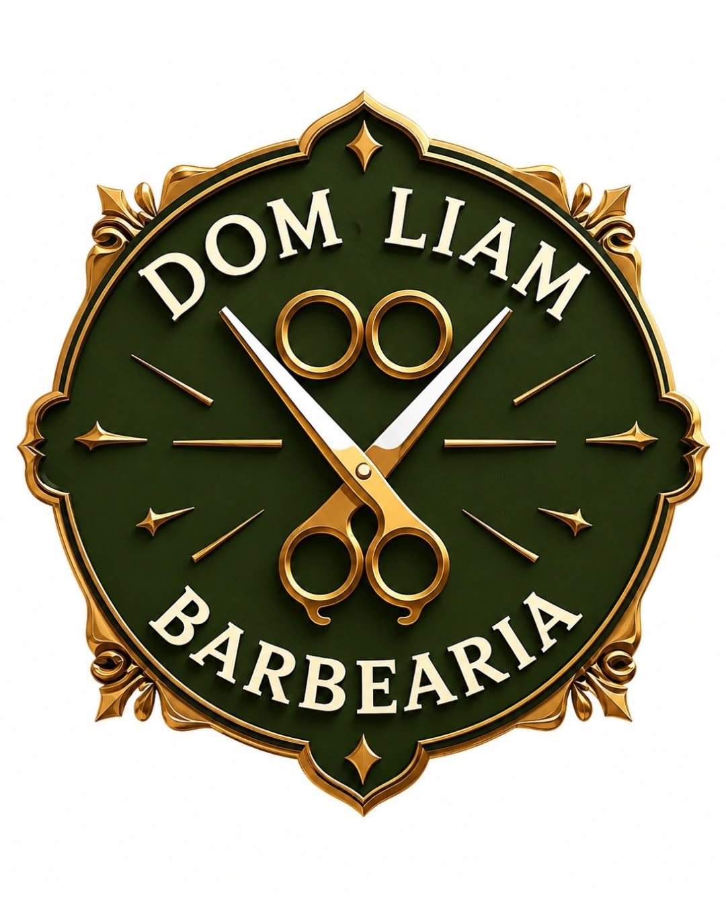
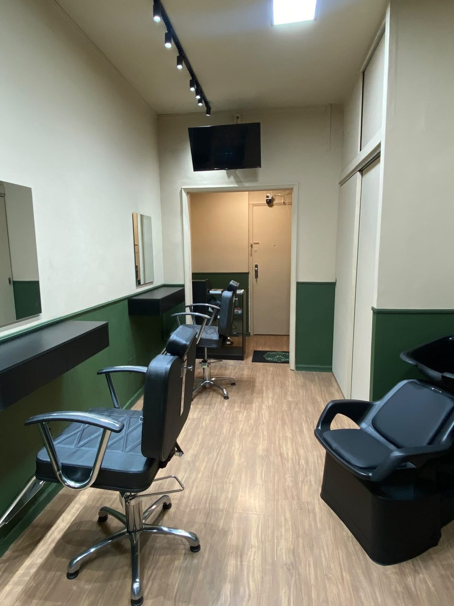
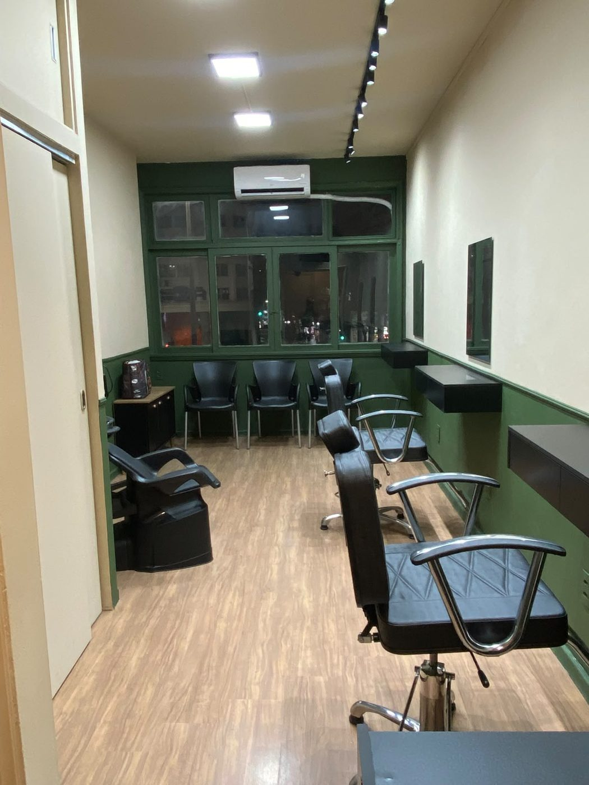
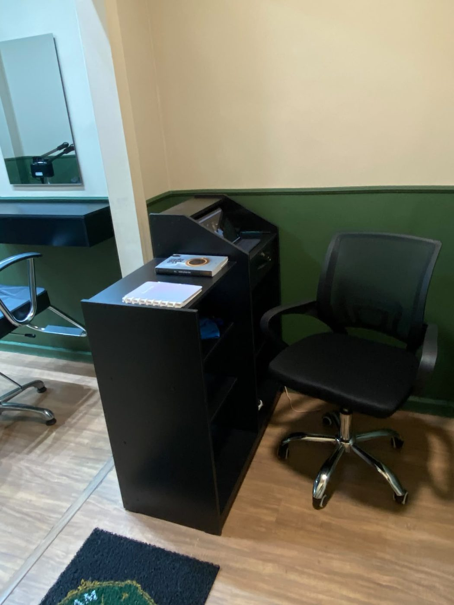

Av. Presidente Vargas
Av. Presidente Vargas, 633, sala 205
Centro, Rio de Janeiro, RJ
CEP
20071-905
A Dom Liam Barbearia atende em duas unidades estratégicas no Centro do Rio de Janeiro: na Av. Presidente Vargas e no Camelódromo da Uruguaiana.


Paredes em verde e areia, móveis pretos, detalhes dourados e iluminação planejada para a precisão do corte. Aqui o atendimento é calmo, o cuidado é dedicado a cada detalhe e o resultado vem de quem leva o ofício a sério.
Três cadeiras de corte, lavatório, espelhos amplos e uma espera confortável no nº 633, sala 205.


Av. Presidente Vargas, 633, sala 205
Centro, Rio de Janeiro, RJ
CEP
20071-905
Quadra D, Boxes 140N e 141N
Centro, Rio de Janeiro, RJ
Acesso rápido pelo metrô
Uruguaiana
| Segunda, quinta e sábado | 09h às 19h |
| Terça, quarta e sexta | 09h às 21h |
| Domingo | Fechado |